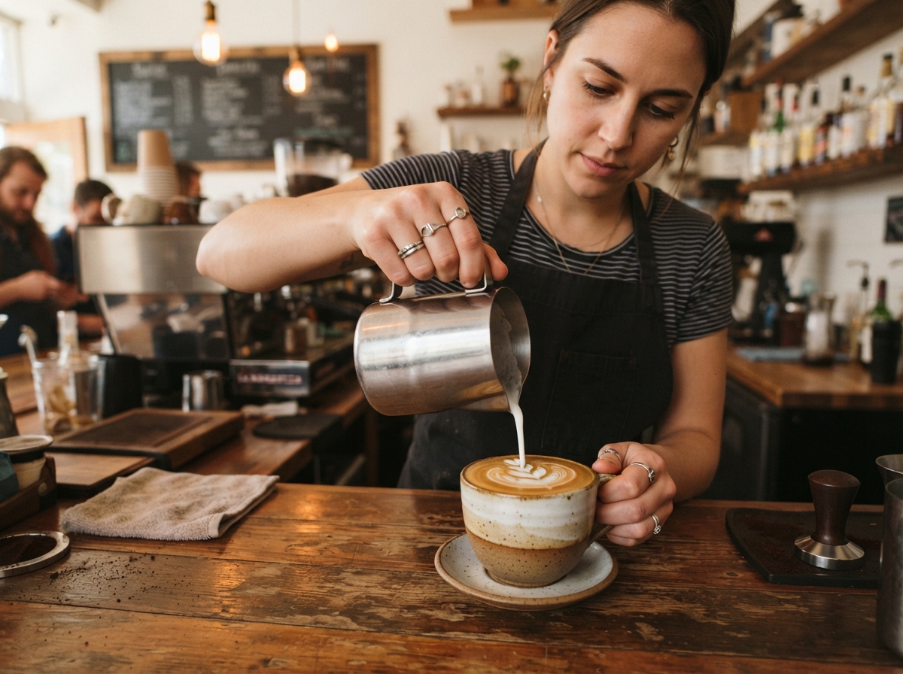
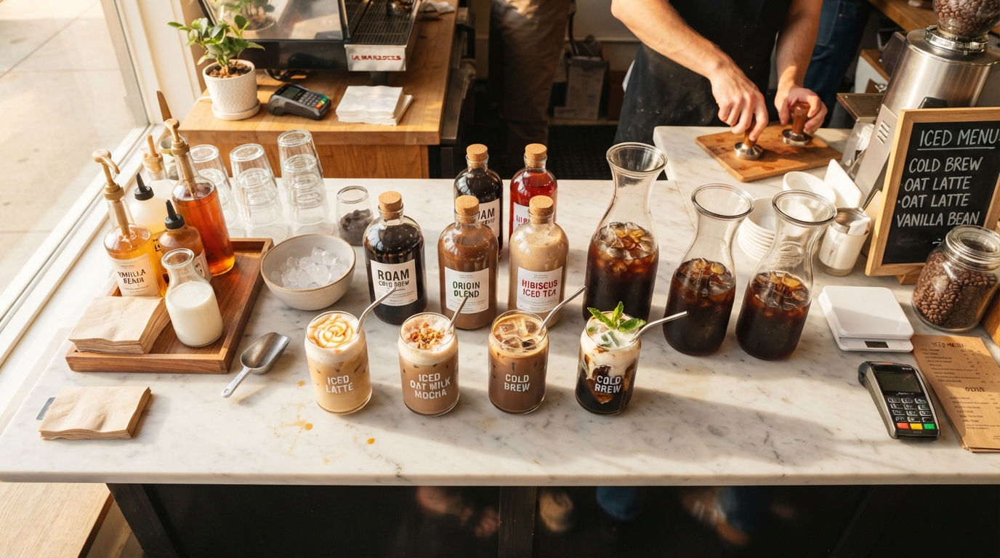
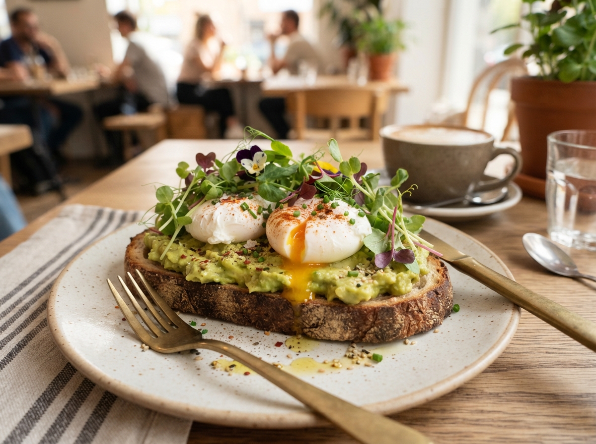
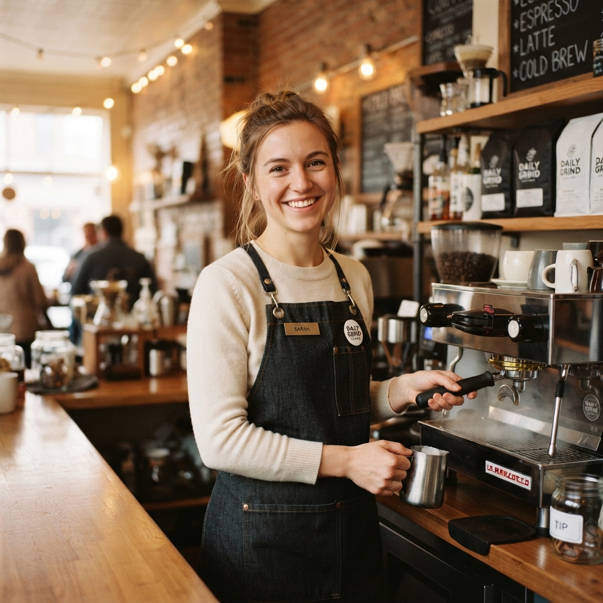
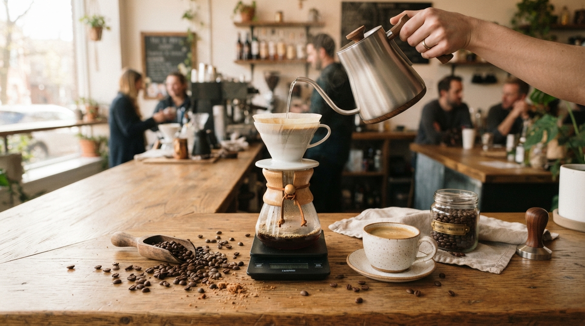
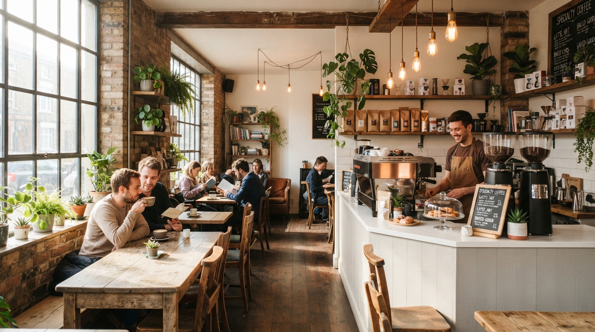

Plate 01 / Architecture
Plate 01 / Architecture
Sunlit Greenhouse Main Roastery
09:15 AMOur 1920s heritage timber roastery bathed in gentle morning sunbeams and lush tropical monstera foliage.
Moments of morning quietude, botanical greenery, steam curls, and slow artisanal coffee craft at Brew & Bloom.
Plate 01 / Architecture
Our 1920s heritage timber roastery bathed in gentle morning sunbeams and lush tropical monstera foliage.

Plate 02 / CraftMicro-textured oat milk poured into single-origin Sidama espresso at calibrated 65°C.

Plate 03 / ExtractionOne drop per second yields liqueur-like clarity and zero bitterness, infused with wild dried lavender.
 Plate 04 / Boulangerie
Plate 04 / Boulangerie
Cultured-butter croissants and Swedish cardamom buns emerging steaming from our stone hearth oven.
 Plate 05 / Brew Ritual
Plate 05 / Brew Ritual
Freshly roasted beans releasing trapped carbon dioxide, awakening jasmine and sweet bergamot tasting notes.

Plate 06 / KitchenNaturally leavened sourdough topped with smashed Hass avocado, farm greens, and house citrus vinaigrette.

Plate 07 / PeopleHead roaster Elena dialing in extraction parameters to match humidity and barometric air pressure.

Plate 08 / HeritageRestored German cast-iron drum roaster, providing even radiant thermal conduction for delicate micro-lots.
 Plate 09 / Cupping
Plate 09 / Cupping
Evaluating terroir, acidity, sweetness, and floral aromatics from Oaxaca and Sidama crop arrivals.

Plate 10 / BotanicalsOver 40 species of subtropical foliage purifying the indoor air and establishing a tranquil oasis.
 Plate 11 / Ceramics
Plate 11 / Ceramics
Custom-thrown mugs crafted by local Portland potters, designed to retain ideal 60°C serving heat.
 Plate 12 / Ambiance
Plate 12 / Ambiance
Golden hour turns into evening glow with gentle acoustic vinyl records and botanical mocktail specials.
"Light and shadow dancing across an espresso crema is nature's own ephemeral painting. We simply invite you to pause and witness it."